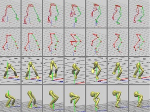

Automatic Gait Motion Capture with Missing-marker Fillings
|  | |
Abstract Realistic 3D models are of great importance for many applications such as film special effect, video games and robotics. 3D reconstruction from multiple images is the creation of three dimensional models from a set of images. It is the reverse process of obtaining 2D images from 3D scenes. Camera calibration is the process of estimating the parameters of a camera model approximating the camera that produced a given photograph or video, and it is essential for 3D reconstrunction. |
|
Paper Xiaoming Deng, Shihong Xia, Wenzhong Wang, Zhaoqi Wang, Liang Chang, Hongan Wang. Automatic Gait Motion Capture with Missing-marker Fillings. (poster) ICPR 2014. |
|
| Video
|
|
(This web page last updated on Nov. 2013.)